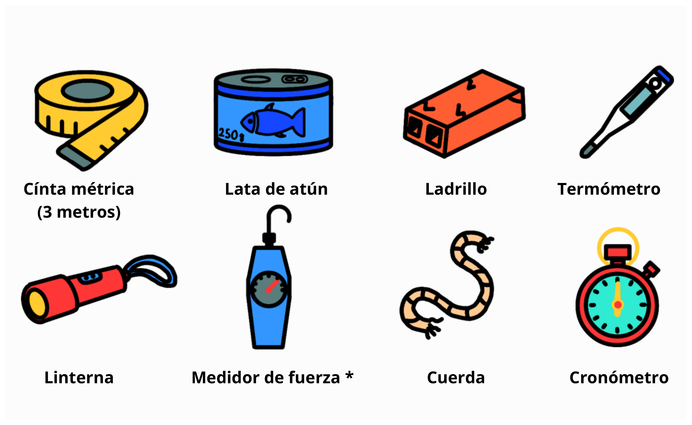
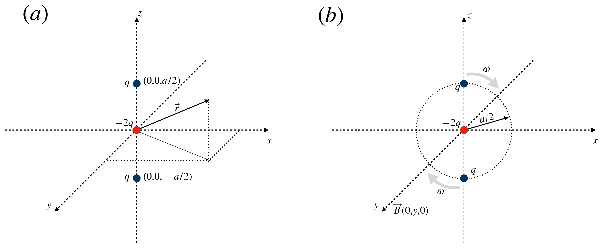
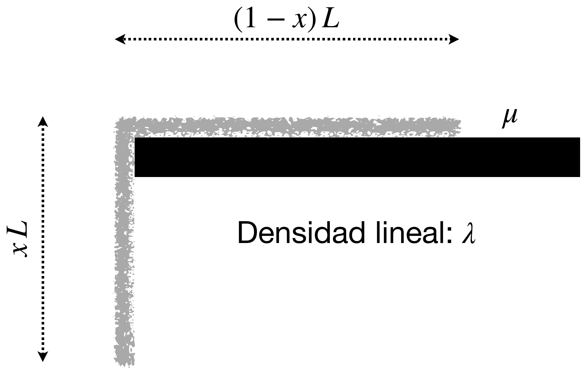
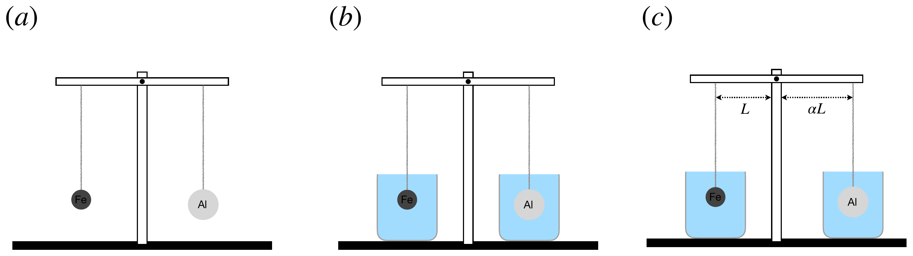
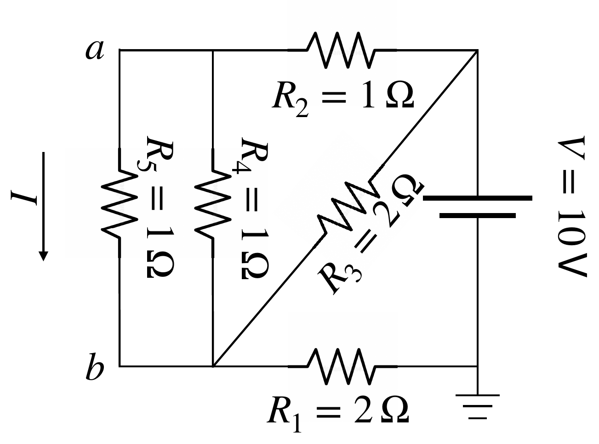

Sobrevivir en órbita y escapar de un planeta (con el diseño de una medida de g), tres cargas, una cuerda sobre el borde de una mesa, esferas de aluminio y de hierro en una balanza dentro del agua, y una red de resistencias. La primera prueba en tres campus a la vez; la inscripción, del 6 de noviembre al 13 de diciembre de 2024, en la web de la sección local.
| documento | castellano | euskera |
|---|---|---|
| Enunciado | PDF1.2 MB | PDF1.2 MB |
Las respuestas definitivas de cada apartado deben incluirse en la hoja de respuestas adjunta. Adicionalmente, justificar y analizar el procedimiento y los resultados en las hojas para cálculos puede resultar muy importante para la corrección de la prueba, ya que pueden otorgarse puntos si el procedimiento y el razonamiento son correctos, a pesar de que pueda haber algún error de cálculo.
25 puntos
Sois dos astronautas que os encontráis en misión alrededor de un planeta llamado Zima. Sin embargo, durante vuestra aventura surgen algunos problemas técnicos que complican vuestra supervivencia. Vuestra misión es resolver estos problemas aplicando principios físicos y cálculos precisos.
Inicialmente, vuestra misión consiste en permanecer en una órbita circular de radio 10\,000\,\mathrm{km} durante un tiempo de un año para tomar fotografías científicas. Sin embargo, debido a un contratiempo, llegáis tarde a la órbita, invirtiendo un tiempo extra de 3 meses. Dado que solo disponéis de suministros suficientes para el tiempo total de un año, debéis ajustar la órbita para que os den los suministros para sobrevivir una vuelta entera a Zima y poder volver sanos y salvos a vuestro hogar.
(a) Determina el radio r_2 de la nueva órbita en la que debéis situaros para poder sobrevivir a la travesía dando una vuelta completa a Zima.
Tras completar la órbita ajustada, vuestro cohete experimenta un fallo técnico en el camino de vuelta. Esto os obliga a aterrizar en la superficie de otro planeta llamado Tek. Para poder escapar, necesitáis conocer la velocidad de escape del planeta. Para obtenerla, decidís empezar a medir la aceleración de la gravedad en la superficie del planeta.
Disponéis de los objetos mostrados en la figura 1 para realizar la medición.

(b) Explica cómo podríais determinar la aceleración de la gravedad utilizando uno o varios de los objetos disponibles. (No es necesario usar todos los objetos; existen varias formas válidas de hacerlo.)
(c) Sabiendo que la aceleración de la gravedad de Tek es 8{,}87\,\mathrm{m/s^2} y asumiendo que es perfectamente esférico con radio 2\,440\,\mathrm{km}, calcula la velocidad de escape v_e que debéis alcanzar para abandonar su superficie.
(Datos: constante de gravitación universal G=6{,}67\times 10^{-11}\,\mathrm{N\,m^2/kg^2}.)
25 puntos
Tenemos dos cargas eléctricas estáticas de valor q situadas en las posiciones (0,0,a/2) y (0,0,-a/2), y otra carga con valor -2q en el origen, como muestra la figura 2(a).

(a) Calcula el campo eléctrico \vec{E}(\vec{r}) en un punto arbitrario del espacio \vec{r} (8 puntos).
(b) Supongamos ahora que las dos cargas q comienzan a rotar de forma solidaria alrededor de la carga -2q con la misma velocidad angular \omega, como se indica en la figura 2(b). Calcula el campo magnético \vec{B}(\vec{r}) en el eje y. ¿Cuál es la fuerza total que sufre la carga -2q? (8 puntos)
(c) Calcula ahora el campo eléctrico efectivo en un punto \vec{r} tal que |\vec{r}|\gg a. Para un observador en ese punto, las tres cargas están situadas prácticamente en el mismo sitio, así que observa un campo eléctrico efectivo que se denomina campo eléctrico multipolar. Puedes usar la aproximación \sqrt{1+\alpha} \approx 1+ \alpha/2, que sirve para cualquier variable \alpha tal que |\alpha |\ll 1, ya que podemos considerar que las potencias superiores de \alpha son mucho menores y, por tanto, despreciables (9 puntos).
15 puntos
Consideremos una cuerda de longitud L y densidad lineal uniforme \lambda. La cuerda cuelga parcialmente de una mesa, siendo el coeficiente de rozamiento entre la cuerda y la mesa \mu, como se indica en la figura 3. ¿Cuál es la proporción máxima de la cuerda que puede colgar sin que la cuerda se caiga? Justifica tu respuesta (15 puntos).

20 puntos
Supongamos que tenemos dos esferas perfectas, ambas de 1\,\mathrm{kg} de masa, hechas una de aluminio y otra de hierro. Ambas cuelgan a la misma distancia del fiel, como indica la figura 4(a).

(a) ¿Hacia qué lado se inclinará la balanza? (3 puntos)
(b) ¿Y si sumergimos las esferas en agua, como indica la figura 4(b)? Justifica tus respuestas calculando las fuerzas que sufre cada esfera (7 puntos).
(c) En este último caso, si la esfera de hierro está colgada a una distancia L=20\,\mathrm{cm} del fiel, ¿cuál sería la distancia a la que habría que colgar la esfera de aluminio para que la balanza permaneciera en equilibrio (ver la figura 4(c))? (10 puntos)
(Datos: densidad del aluminio \rho_\text{Al}=2{,}7\,\mathrm{g/cm^3}; densidad del hierro \rho_\text{Fe}=7{,}9\,\mathrm{g/cm^3}; densidad del agua \rho_\text{agua}=1{,}0\,\mathrm{g/cm^3}.)
15 puntos
Consideremos el circuito eléctrico de la figura 5. Calcular la caída de voltaje entre los puntos a y b y la corriente en la rama indicada (15 puntos).
